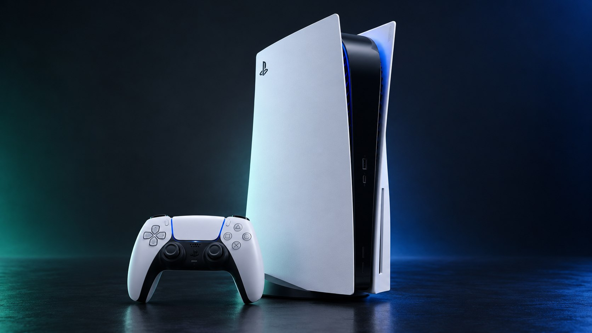

Choose your console.
Loaders, payloads and game menus. Find the right build for your setup.
PS4
Open PS4 hostFirmware, payloads, game menus and console tools.

PS5
Open PS5 hostCompatible loaders, native payloads and management tools.
More for your setup.

Tools & downloads
Before you load
Match the console firmware and game update before loading. Opening this page starts no native code. Source matching does not replace testing on a physical console.